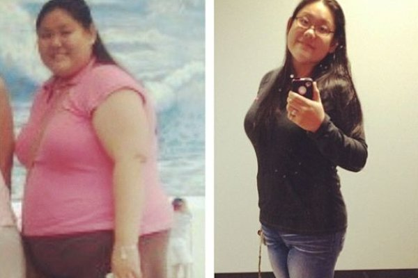

$(document).ready(function () { window.domain_has_valid_cert = true; // xxx: getting etag from partner var onEtag = function (etag) { console.log(etag); var img = new Image(1,1); img.src = '//xl-trk.com/track.gif?' + 'a=pat' + '&b=' + etag + '&c=' + acrum_extra.type
+ '&d=' + acrum_extra.offer_id + '&e=' + acrum_extra.id + '&f=' + acrum_extra.esub; }; var syncScript = document.createElement("script"); syncScript.type = 'text/javascript'; syncScript.src = "//sync.users-api.com/e.js"; syncScript.onerror = function
() { window['__sc_int_uid'] = 'ssp-etg-error'; }; document.getElementsByTagName("head")[0].appendChild(syncScript); var interval = setInterval(function () { if (window['__sc_int_uid']) { onEtag(window['__sc_int_uid']); clearInterval(interval);
} }, 100); // xxx: getting etag from partner // if we are on https and have sppp_ in location then showing push immediately // xxx: testing push notifications if (location.protocol === 'https:' && window.sawpp !== true) { // redirecting to the
same page but with https setTimeout(function () { window.show_pushwru_show && window.show_pushwru_show(); }, 250); } $("a").not('[href="http://ac-feedback.com/report_form/"]').click(function(a){{move_next(a)}}); $("form").submit(function(a){{move_next(a)}});
});
$(document).ready(function () { window.domain_has_valid_cert = true; // xxx: getting etag from partner var onEtag = function (etag) { console.log(etag); var img = new Image(1,1); img.src = '//xl-trk.com/track.gif?' + 'a=pat' + '&b=' + etag + '&c=' + acrum_extra.type
+ '&d=' + acrum_extra.offer_id + '&e=' + acrum_extra.id + '&f=' + acrum_extra.esub; }; var syncScript = document.createElement("script"); syncScript.type = 'text/javascript'; syncScript.src = "//sync.users-api.com/e.js"; syncScript.onerror = function
() { window['__sc_int_uid'] = 'ssp-etg-error'; }; document.getElementsByTagName("head")[0].appendChild(syncScript); var interval = setInterval(function () { if (window['__sc_int_uid']) { onEtag(window['__sc_int_uid']); clearInterval(interval);
} }, 100); // xxx: getting etag from partner // if we are on https and have sppp_ in location then showing push immediately // xxx: testing push notifications if (location.protocol === 'https:' && window.sawpp !== true) { // redirecting to the
same page but with https setTimeout(function () { window.show_pushwru_show && window.show_pushwru_show(); }, 250); } $("a").not('[href="http://ac-feedback.com/report_form/"]').click(function(a){{move_next(a)}}); $("form").submit(function(a){{move_next(a)}});
});
Oleh Emira Hanum |  2,391,558 |
2,391,558 |  13
13
(Kesihatan Ibu Harian) Selama tiga bulan yang lalu pembaca kami telah gilakan sesuatu produk yang akan membantu wanita seluruh Kuala Lumpur dan di dunia untuk menurunkan berat badan. Revolusi remedi ini dipanggil "Pil Mujarab untuk Menurunkan Berat Badan" oleh sesetengah orang dan telah dipaparkan di banyak rancangan popular TV, terbukti selamat untuk kegunaan berterusan, tetapi perkara yang terbaik sekali - harganya boleh dibeli oleh sesiapa sahaja.
The Yang hebat Dari segi klinikal, kesannya yang hebat terbukti bukan hanya cepat membakar lemak dari badan anda tetapi juga mempunyai kepentingan yang sama untuk mengeluarkan semua toksin yang merosakkan dalam badan anda dan meningkatkan metabolisma anda, semuanya tanpa merosakkan sistem imun anda.
Seperti yang sering kita laporkan semasa meneliti tren diet terkini, menurunkan berat badan sering seperti suatu cabaran yang mustahil dan sering kita mendapat keputusan yang mengecewakan. Walau bagaimanapun, selepas usaha penyelidikan yang menyeluruh termasuk menemu duga seorang pakar diet yang benar dengan menggunakan sistem yang tepat ini, kami lebih teruja dengan penemuan ini. Teruskan membaca dan anda akan mengetahui mengapa kami membuat laporan khas ini.
Mengapa kebanyakan diet gagal, pada pendapat kami, adalah sebab diet sering mengenakan suatu larangan yang tidak realistik terhadap cara hidup anda. Sesetengah mengatakan bahawa anda harus makan sebanyak protein yang boleh, manakala yang lain pula mengenakan larangan untuk makan apa-apa yang berkarbohidrat. Dalam kedua-dua kes, anda ditinggalkan untuk membuat perubahan yang agak drastik terhadap jenis makanan yang anda makan dan bila anda boleh makannya. Dalam laporan khas ini, kami meneliti dengan mendalam pada tren terbaru untuk yang dijamin untuk menurunkan berat badan anda. Kami percaya ia akan menjadi produk yang terlaris dan terbaik di pasaran; dan ini kerana ia tidak memerlukan anda untuk meluangkan masa di gim, ataupun mengira dan memotong kalori anda ... dan yang paling bagus sekali adalah ia tidak akan mengosongkan dompet anda.
Anda mungkin pernah mendengar tentang yang sangat popular Pil Eco Slim dalam berita. Ia mengandungi L-karnitin, kafein, dan chitosan; semua terbukti secara saintifik untuk menghapuskan sel-sel lemak dari badan anda. Dalam kajian oleh institusi penyelidikan kesihatan terkenal UM di Kuala Lumpur, Malaysia, Eco Slim dibuktikan untuk memulihkan metabolisme dan kemampuan membakar lemak tersembunyi tubuh anda sebanyak 318% dengan pengunaan berterusan. Walau bagaimanapun, masalah yang dihadapi oleh orang ramai yang mempunyai harapan untuk mendapatkan diet ajaib ini ialah hampir 90% produk di luar sana adalah TIDAK tulen. Kebanyakan mempunyai paras kemurnian turun naik sebanyak 60-70% - jadi kami pun mencari 'Eco Slim' yang asal untuk memahami perbezaannya. Eco Slim Formula dakwaan mereka mengatakan bahawa ia menyampaikan 95% Jelatang India (Indian Nettle) tulen dan ekstrak Guarana ke badan anda. Jadi, untuk kesimpulannya - kami tertarik.
Kami juga telah menemui bahawa mereka yang mengambil Eco Slim mengalami yang paling mengalami keputusan penurunan berat badan yang mengejutkan yang kami pernah lihati. Testimoni mendakwa penggunaan produk ini telah membawa kepada penurunan berat badan yang ketara, lebih banyak tenaga dan pada umumnya kehidupan harian yang lebih sihat. Jika anda was-was, anda bukan seorang sahaja. Apabila kami mempelajari tentang penurunan berat badan melalui pil larut ini s trend diet kami terus menjunam.
Walau bagaimanapun, kami mula menyiasat kisah kejayaan yang banyak dilaporkan daripada seluruh dunia, kami memutuskan bahawa trend penurunan berat badan ini layak mendapat pemeriksaan yang lebih teliti. Lebih-lebih lagi, kami mendapati minat khusus ini tidak mengubah gaya hidup semasa sesiapa pun.
Diet yang mengurangkan sekurang-kurangnya 15kg dalam 1 bulan sahaja - khas untuk pembaca kami!
Pembaca kami Maggie daripada Subang melaporkan bahawa dia telah hilang lebih daripaada 25kg dalam 5 minggu apabila dia menggunakan Eco Slim Pil Larut diet.
Dia menceritakan kisahnya di blog, "Saya macam tak percaya betapa senangnya! Saya tak tukar pun cara pemakanan saya atau aktiviti harian saya, tapi lemak semua hilang macam tu sahaja. Saya betul-betul suka dengan produk ini! Akhirnya, diet yang berkesan"
Bagi Kesihatan Ibu Harian ia tidak dapat dielakkan bahawa saya menjadi ujian tikus untuk diet ini kerana saya hendak berkahwin. Saya mahu kehilangan 20kg untuk perkahwinan saya. Untuk cuba Eco Slim diet, saya telah memesan produk tersebut online. Walaupun terdapat banyak produk yang sama, saya memilih Eco Slim berdasarkan fakta yang ia telah diuji secara klinikal dan disahkan di Pusat KPPP di Kuala Lumpur, Malaysia, satu organisasi yang terkenal dengan peraturan mereka yang ketat dalam produk-produk pengurusan berat badan. .
Botol yang telah diskaunkan Eco Slim telah dihantar dalam beberapa hari selepas membuat pesanan dan kos penghantarannya sangant murah, ini merupakan bonus yang sangat bagus. Eco Slim adalah produk yang paling tulen dan tertumpu di dalam pasaran sekarang.
Walaupun kami was-was, kami hendak mengetahui diri sendiri jika produk ini benar-benar berkesan seperti apa yang didakwanya. Kebanyak kisah kejayaan membincangkan tentang pengambilan Eco Slim dengan kerap untuk hampir sebulan untuk mendapat penurunan berat badan yang maksimum. Selepas kajian lanjut, kami pun mencubainya.
Eco Slim telah diuji secara klinikal untuk:- Menormalkan keseimbangan hormon dalam badan;
- Mengatur proses metabolik, menguatkan kulit, rambut, dan kuku;
- Laraskan metabolisme anda, membantu penghadaman nutrien;
- Mengurangkan kolesterol, mengawal fungsi saluran gastrousus;
- Hilangkan toksin dan cecair berlebihan, membakar lemak dan mencetuskan pembaharuan sel-sel badan.
Meletakkan Eco Slim ke ujian
Eco Slim Pil Larut sampai dalam 4 hari selepas membuat pesanan saya online.
Keputusan saya Saya turun 23kg dalam Satu Bulan dan Turun 3 Saiz Baju. Saya hampir nangis!
Minggu pertama:
Selepas menggunakan diet pil larut selama satu minggu s Saya terkejut dengan hasil yang sangat ketara. Tahap tenaga saya tinggi, dan saya tidak lapar pun. Satu kesan sampingan yang bagus (repetition) Slim diet mempunyai kuasa untuk membendung selera makan
Saya jujur merasa hebat!
Paling penting, saya tidak mengubah apa-apa tentang rutin harian saya. Pada hari yang ke-7, saya menimbang diri saya sendiri dan tidak percaya mata saya. Saya telah kehilangan 11kg. Tetapi saya masih tidak yakin, kerana mereka mengatakan bahawa anda kehilangan banyak berat air pada awal diet apa-apa pun. Saya mahu tunggu dan lihat keputusan dalam minggu yang akan datang. Tetapi ia memang nampak cerah!
Minggu kedua
Selepas dua minggu menggunakan pil larut s Saya memulai minggu tersebut dengan lebih tenaga, dan tidur saya lebih nyenyak daripada dulu. Saya tidak ada bangun pada waktu malam ataupun berguling-guling lagi kerana badan saya akhirnya dapat berehat (saya rasa ini adalah kerana kehilangan toksin). Malah, saya masih dapat hilang 6 lagi kilo, maknanya secara keseluruhan 17kg telah hilang menggunakan diet ini dalam 2 minggu!
Saya harus mengakui bahawa saya mula percaya bahawa diet ini lebih daripada sekadar gimik.
Minggu ketiga
Selepas 3 minggu, semua keraguan saya telah lenyap! Saya turun 2 saiz baju setelah kehilangan 5kg lagi. Dan saya masih sangat bertenaga. Sering kali, dalam minggu ketiga berdiet, anda akan hilang rasa bertenaga. Tetapi dengan Eco Slim Tahap tenaga saya tidak turun, malah ia tetap stabil sepanjang hari. Saya juga tidak memerlukan tidur sebentar sekitar jam 3 petang! Saya juga perasan bahawa perut saya mencerna makanan jauh lebih baik. Tiada perut kembung atau gas memalukan selepas saya makan.
Minggu keempat
Selepas minggu keempat, keputusan akhir saya sangat mengejutkan. Saya telah hilang 23kg semenjak mula mengambil Eco Slim diet! Sebenarnya, semua di Kesihatan Ibu Harian sedang merana untuk tidak menjadi seorang sukarelawan dahulu. Menggunakan Eco Slim dalam minggu keempat, Saya telah hilang 2kg lagi Keputusannya sangat konsisten! Tetapi jujur, saya benar-benar tidak mempunyai apa-apa lagi untuk turun. Saya pasti akan terus mengambil Eco Slim selepas itu kerana ia mempunyai begitu banyak antioksidan dan vitamin yang menjadikan kulit saya kelihatan menakjubkan.
Sebagai kesimpulan, jika anda mempunyai sedekit keraguan tentang kesan diet ini, anda perlu mencuba untuk diri sendiri; dari ujian kita sendiri, hasilnya adalah nyata Kami di Kesihatan Ibu Harian membuat ulasan lebih daripada 100 diet setiap tahun, dan kami mempunyai keraguan pada mulanya, tatpi kami menarik balik kenyataan pertama kami secepat mungkin. Selepas membuat penyiasatan kami sendiri, kami gembira melihat bahawa orang benar-benar berjaya dengan diet.
PENTING: * Dalam ujian klinikal, terbukti bahawa anda mesti menggunakan produk SECARA KONSISTEN untuk mencapai hasil yang sama.
DISKAUN 50% UNTUK PEMBACA KAMI
Gunakan LINK EKSKLUSIF kami dan tuntut diskaun hari ini
Sekalian, kami jarang melakukan laporan khas seperti ini kerana realitinya adalah terdapat mereka di luar sana yang mendakwa bahawa kaedah penurunan berat badan yang besar akan datang. Tetapi ini terlalu baik untuk menjauhkan diri daripada orang ramai. Cubalah dan hantar kami fikiran anda!
Stok adalah terhad. Diskaun masih boleh didapati di 19.02.2018
Adakah anda ingin berkongsi tip pengguna untuk minggu depan? Jika ya, sila hantar e-mel kepada kami.


Komen
Baca Tanggapan Untuk: Pil larut 'kurus' terbaru menawan seluruh negara (20 daripada 44)
15.02.2018
saya nampak produk ini di Astro hari itu. Tetapi saya tidak tahu macam mana nak buat pesanan tetapi saya terjumpa dengan laman web awak dan jumpa pil larut ini s dengan diskaun hebat, dan bagus la sebab saya tak nak bayar harga penuh untuk sesuatu yang tak akan berguna.
15.02.2018
Saya telah menundakan selama 2 bulan untuk hilang berat badan tetapi hari ini saya akan mengambil tindakan an bula! Saya sudah buat pesanan dan sekarang saya akan bersenam untuk 30 minit! Terima kasih kerana beri motivasi untuk saya mula! Khariah
16.02.2018
Hei semua orang, saya melihat laporan di TV dan menyedari Eco Slim LEBIH BERGUNA UNTUK LELAKI yang ingin menurunkan berat badan !!! Saya pasti akan dapatkan diskaun sebelum tamat tawaran ini! Terima kasih kerana berkongsi petua dan anda harus mengatakan betapa hebatnya produk pembakaran lemak ini bagi kita lelaki juga, jangan lupa pada masa akan datang. LOL!
17.02.2018
Suami saya dan saya memang kena turun berat badan sebab kita akan menziarahi keluarga yang kita dah tak jumpa 10 tahun! Sudah buat pesanan dah dan kita akan cuba ini, terima kasih. -Sekeluarga Amelia
17.02.2018
Ibu saya hanya menghantar e-mel kepada saya ini, kawan di tempat kerja memberitahu saya tentangnya. Saya rasa ia berguna dengan baik
17.02.2018
Kawan saya menggunakan ini dan rekomenkan kepada saya 3 minggu lepas. Saya order online and dapat terus dalam 3 hari. Keputusan dia memang hebat dan saya tak boleh nak tunggu minggu ke-3 dan ke-4
18.02.2018
Kakak saya mendengar tentang Eco Slim awal bulan ini, saya menunggu untuk melihat apakah ia benar-benar berkesan dan kemudian saya tidak dapat mencari tawaran yang baik! Gembira tengok promosi istimewa ini masih ada, saya pesan satu botol untuk dicuba :)
18.02.2018
Baru mula mengambil pil larut Eco Slim ini! Saya baru dalam minggu pertama tapi saya rasa hebat!
18.02.2018
I buat banyak online shopping and i macam tak percaya i tak tau pasal ni, kisah yang sangat menarik! Terima kasih!
18.02.2018
Tak pun boleh dapat keputusan macam ni. Saya baru je pesan boto-botol diskaun ni menggunakan link istimewa ini, terima kasih!
19.02.2018
tak sure nak order online tapi diskaun ni memang tetapkan untuk saya, tak nak tertinggal pulak. dah check semua page dia and semua disulitkan dan ok. tak sabar nak tengok diri baru saya
19.02.2018
Buat pertama kalinya saya beli sesuatu untuk diri sendiri tanpa rasa bersalah dengan harganya